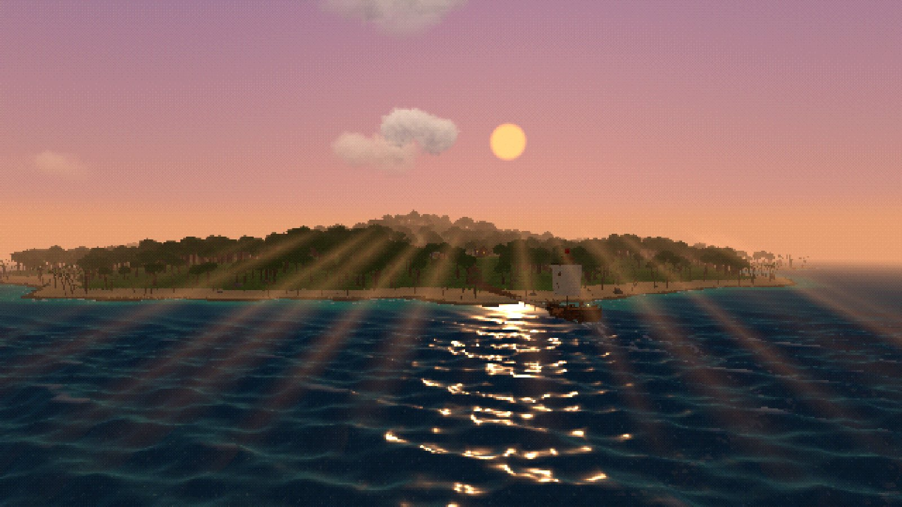
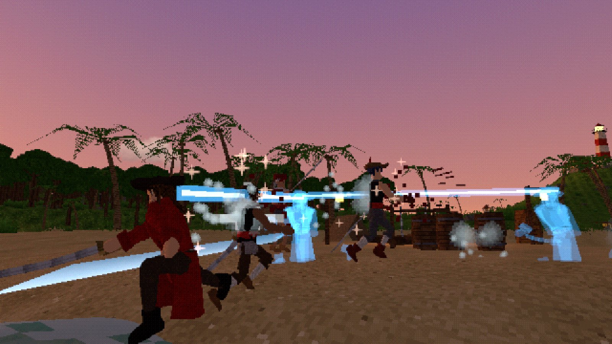
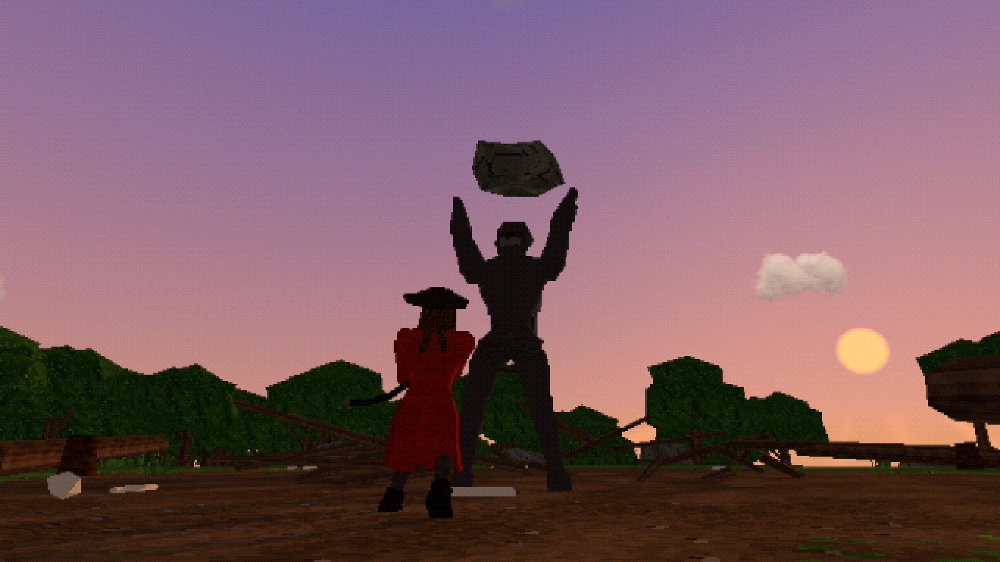
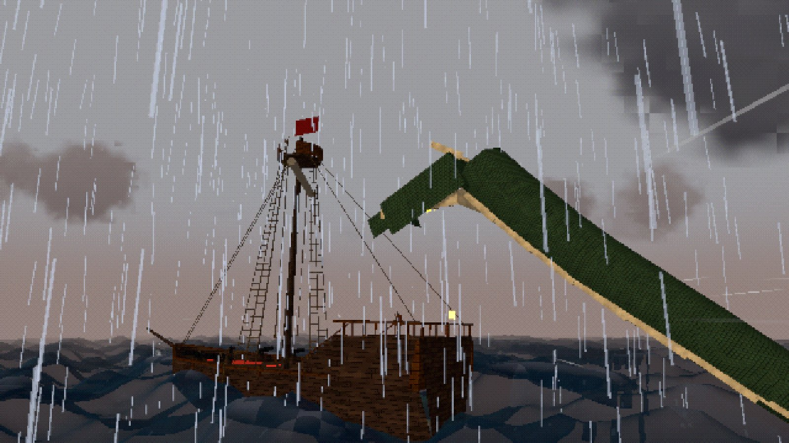
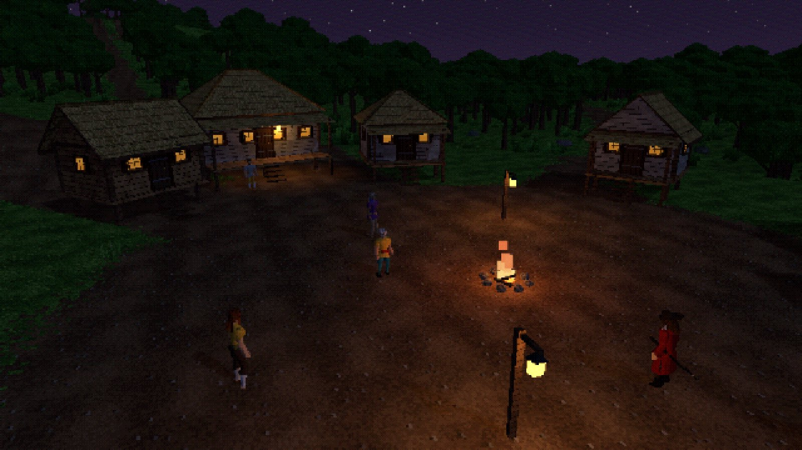
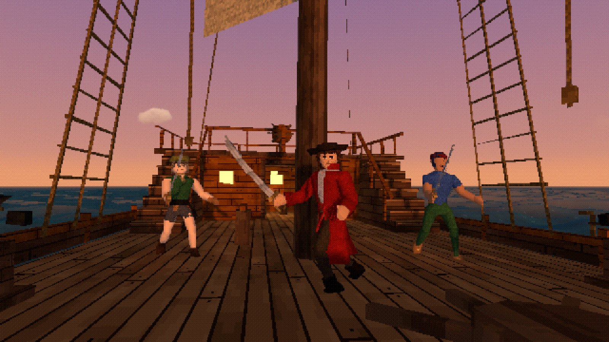

What's out there
An island chain from your seed
Past Redtide Rock the log pose leads to jungle isles made for your world. Each has a pirate camp under a named captain, a bug lair, old ruins and a summit lookout, and every one is tougher than the last.
Outposts at the edge of the map
Every isle has a village: an inn to rest at, a trader, a cook, a job board and an elder who pays for the work and knows the way on.
A beast on every isle
The Silverback rules the far side of each jungle isle. It roars, leaps and throws boulders. Bring it down for its hoard and its pelt.
Read the log pose
Hold L. Needles point to the islands ahead, with their kind and how dangerous they are. Where the chain forks, you choose by sailing. The needle settles after a while ashore, or the moment the beast falls.
The sea between
Every leg has pirate fleets at the next island's level, hazards like reefs, fog banks and whirlpools, and wrecks, bottles and islets to loot. On some, a Sea King.
Fight like a shonen hero
Cutlass, katana, axe, twin blades, pistols or fists, each with its own combos, techniques, ultimate and jumping attack. Parry, dodge, and break red wind-ups with Armament Haki.
Your ship, your problem
Trim the sail to the wind, run out the guns, board a brig and take her prize. When she's holed, patch, pump and douse before she goes down.
Up to four captains
Co-op on the Windows build: one hosts, friends join by address, and you share one ship. Revive each other when it goes wrong.
All of it made in code
Bodies, islands, ships, textures, music and sound, drawn the way a PS1 would: wobbly vertices, dithered colour, a low pixel grid.
Controls
| Move | W A S D | Look | Mouse |
|---|---|---|---|
| Sprint | Shift | Jump / double jump | Space |
| Light / heavy attack | Left / right click | Dodge roll | C (Left Ctrl on desktop) |
| Parry / block | Q | Interact, talk | F |
| Ready weapon | Z | Skills / ultimate | 1 - 4 / R |
| Quick items | 5 - 7 | Inventory | Tab / I |
| Skill map | K | Sea chart | M |
| Log pose (hold) | L | Summon ship (hold) | B |
| Menu | Esc | Fullscreen | F11 / Alt+Enter |
At the helm: W / S set the sail, A / D steer, left click fires a broadside, F leaves the wheel.
Desktop build
The Windows build runs the full renderer and has co-op for up to four captains (one hosts, friends join by address).
Windows 10 or 11, 64-bit. Unzip it anywhere and run Driftwake.exe; no installer. The build isn't code-signed yet, so Windows may say it "protected your PC": click More info, then Run anyway. All versions and what changed.
About the browser build
Same game, drawn with the browser's WebGL renderer. Co-op is desktop-only for now. Your saves live in this browser, so clearing site data clears them. The first visit downloads the whole game; later ones start quicker.